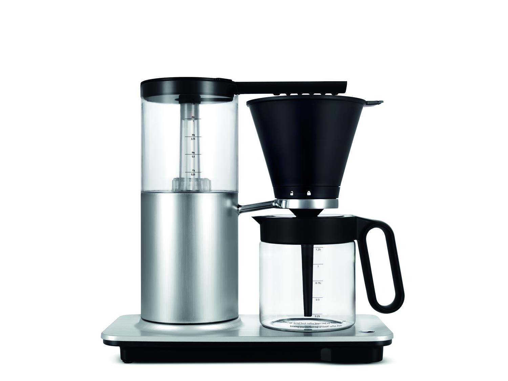

Tervetuloa kahvisivulle!

Millainen on hyvä kahvi?
Parasta kahvi on pavuista itse jauhettuna ja laadukkaalla keittimellä keitettynä.
Miksi jauhaa kahvi itse pavuista?
- Se ei ole kitkerää. Tuore kahvi ei tarvitse maun pehmennystä maidosta
- Itse juuri ennen keittämistä jauhettu kahvi ei närästä. Kun taas kahvia säilytetään valmiiksi jauhettuna, kahvin sisältämä rasva eltaantuu.
- Tuoreessa kahvissa aromit tulevat esiin. Papukahveissa aromit säilyvät paremmin kuin jauhetussa kahvissa, sillä mitä hienojakoisempaa kahvi on, sitä enemmän happi vaikuttaa sen makuun.
Viisi vinkkiä parempaan kahviin
- Kastele suodatinpaperi ennen kahvin annostelua kuumalla vedellä
- Punnitse sekä vesi että kahvi
- Jauha kahvi pavuista juuri ennen valmistamista
- Sekoita ennen tarjoilua
- Älä seisota kahvia pannussa lämpölevyllä
Päivän miete
- Tunteet ja järki,
- lässyn lää
- Elämä sitä, elämä tätä,
- blaa blaa blaa
- Usko, toivo, rakkaus,
- - diipa ja daapa
- Varmaa on vain,
- että kahvia on saatava